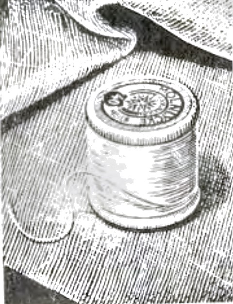
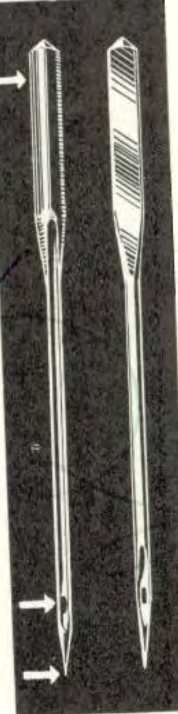
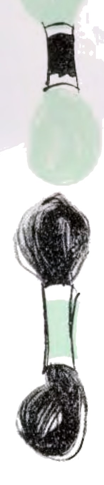
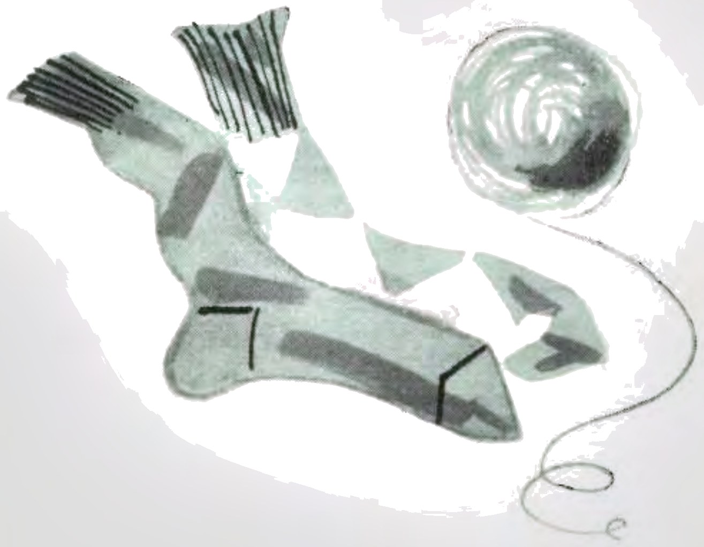
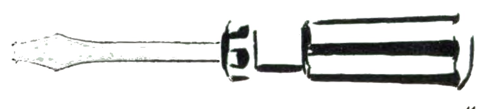

Your study of this Operating Manual will be greatly
facilitated if you fold out the flaps of the front and back cover. By so doing you will all the time have easy
access to the illustrations of the machine with numeral references to the various parts.
Fig. 1.
1. Presser foot
2. Presser foot screw
3. Presser bar
4. Thread guide
5. Needle clamp
6. Needle set screw
7. Needle bar
8. Thread guide
9. Slash thread regulator
10. Three tension discs
11. Graduated tension regulator knob
12. Take-up spring
13. Take-up lever
14. Thread guide
15. Markings for needle starting positions
16. Needle position control
17. Pattern selector
18. Scale for pattern selector
19. Balance wheel
20. Stitch length knob
21. Reverse feed knob
22. Scale for stitch width
23. Stop for buttonhole sewing
24. Stitch width control
25. Drop feed knob
26. Shuttle access door
27. Throat plate
28. Feed dog
Standard attachments
S. 15229 Jointed presser foot (attached to the machine) for straight and zigzag stitching
S. 15237 Button foot
S. 15428 Buttonhole foot
S. 15419 Twin-needle foot with 3 grooves
S. 15427 Raised-seam attachment
S. 15399 Buttonhole knife
3035 Hemmer for straight and zigzag stitching
S. 15236 Hemmer for roll seam
S. 15395 Presser foot for zip fasteners
S. 15460 Darning foot
S. 15423 Needle plate for 1/8 in. eyelets
S. 15420 Edge guide
S. 15232 Pattern presser foot
Twin needle, 3/32 in. needle spread
This manual has been prepared to help you learn to use
your new Husqvarna Automatic in such a way that you will get the very best out of it — to enable you to take
full advantage of all the machine’s special features which put skill into your fingers and make sewing fun.
Maybe you are thoroughly accustomed to sewing by machine and
feel you can skip reading these instructions. Our advice is: Don’t. We can say with fair certainty that you
will find quite a number of ideas here that you hadn’t thought of before, as well as simple sewing tricks that
you had forgotten.
Have the machine in front of you as you read, and try out the
various operations. Even if you have had some previous instruction in the use of your Husqvarna Automatic, this is
probably the first time you have been alone with it — so here is a splendid opportunity to get acquainted.
You’ll find it well worth while, too. For this machine can be used for all kinds of sewing operations —
sewing the most beautiful straight seams, doing ordinary zigzag stitching, and producing without any trouble at all
an amazing variety of automatic embroidery patterns.
Even after you have acquired the general technique of sewing
on the Husqvarna Automatic, you will probably want to consult the manual from time to time in regard to details. So
keep this booklet always at hand — preferably in the case with the machine.
Good luck — and good sewing with your Husqvarna
Automatic!
It’s easy to get acquainted with your HUSQVARNA AUTOMATIC


Needle and Thread
Unless a contrasting effect is desired, the stitching should match the fabric as closely as
possible. It is therefore important to select a needle and thread suited to the material which is being sewn.
The table on this page will help you to do this.
Needle System 705 (15×1) is the one used for the Husqvarna Automatic. In case you forget the number, it
is engraved on a plate attached to the rear of the machine.
Needle and thread selector
Grades
Sizes
Types of fabric and work
Cotton
Silk
Linen
Fine
60
Delicate fabrics like georgette, chiffon, batiste, fine lace, fine linen and other sheer fabrics. For fine lingerie, infants’ clothes and fine lace work.
100 to 150
00 and 000 twist
Medium‑fine
70
Medium light-weight and summertime fabrics. For house dresses, children’s dresses, cottons, aprons, curtains.
80 to 100
0 twist
Medium
80
Dress silks and cottons, light weight to woollens and decorators’ fabrics. For dressmaking and general household sewing, men’s dress shirts and light weight draperies.
60 to 80
A & B twist
Light‑heavy
90
Heavy cretonne, madras, muslin, brocades and quilts. For men’s work shirts and other work clothes, heavy quilting and decorators’ articles.
40 to 60
C twist
Medium‑heavy
100 110
Heavy woollens and suiting, light-weight canvas, bed ticking, upholstery and awning materials, slipcover fabrics. For men’s suits, work and sports clothes, awnings, slipcovers, upholstery and mattresses.
30 to 40
D twist
Heavy
120
Heavy overcoating, duck, ticking, drills, canvas and sacking. For heavy washable uniforms, bedding for hospitals, hotels and camps. Extra heavy and coarse goods.
24 to 30
E twist
60 to 80
Extra‑heavy
130
For canvas bags and heavy canvas products.
20 to 24
40 to 60
2
How to insert a needle
Loosen the needle screw (A, Fig. 3). Insert the needle in the clamp (B) and push it up as far as
it will go. See that the flat side of the needle is turned away from you. Tighten the screw securely, and check
again to make sure that the needle is correctly inserted. The long groove over the needle’s eye should be
facing you.
When using a twin or triple needle, insert in the same way.
Removing the bobbin case from the shuttle
Turn the hand wheel (19, Fig. 1) towards you until the needle is in its highest position. Open the
shuttle access door (26, Fig. 1).
Take hold of the bobbin case with the thumb and forefinger (Fig. 4), so that the latch (A, Fig. 5) is depressed,
and lift the case out.
As long as the latch is depressed, the bobbin is held in its case. To remove the bobbin, release the latch and
turn the case downwards. The bobbin then falls out.
Fig. 3.
Fig. 4.
Fig. 5.
3
Fig. 6.
Bobbin winding is simple
Place a spool of thread on the spool pin nearest the hand wheel. Run the thread through the thread
guide (A, fig. 6) and down under the guide (B) on the tension device and back between the tension discs (C).
Wind the thread two or three times around the bobbin (D), and push the bobbin as far as it will go onto the
winder spindle. This automatically disengages the sewing mechanism.
Start the bobbin winder by pressing the foot pedal, and wind at a moderate speed. Stop winding
when the bobbin is filled to about 1/16 in. from the rim.
The spindle automatically engages the sewing mechanism again, when the bobbin is pulled off.
Bobbin must be evenly wound to produce an even seam
If you find the machine is winding unevenly as in (I), loosen the screw (36, Fig. 2) and move the
tension device slightly inwards toward the machine. Tighten the screw and test to see if the winding is now even.
If the machine winds unevenly in the other direction, as in (II), move the tension device outwards, to the right.
A correctly wound bobbin should look like (III) (somewhat higher in the middle).
Fig. 7.
4
Threading the bobbin case
Hold the bobbin case in your left hand with the slot in the edge upwards or facing you (Fig. 7).
Take the bobbin in your right hand, so that the thread end leads away from you, and drop it into the case. Then,
still with your right hand, draw the thread into the slot in the edge of the case (Fig. 8).
Now lead the thread under the tension spring and let it come out at the notch in the end of the spring (Fig. 9).
Pull the thread out a few inches, and check to see that the bobbin rotates clockwise in the case.
Fig. 9.
Fig. 10.
Fig. 8.
Lower thread tension
The machine comes from the factory with the lower thread tension adjusted for normal use. Do not
alter the tension unless it is absolutely necessary — as for example, when sewing very loosely or tightly
woven fabrics, or when doing special jobs, such as sewing buttonholes, eyelets, etc. To adjust the lower thread
tension, use the small screwdriver which you will find in the attachment box. Take out the bobbin case and turn the
spring screw (Fig. 10) to the right to increase the tension or to the left to decrease it.
Do not turn the spring screw more than 1/8 of a turn without testing to see if the adjustment is
sufficient.
5
Fig. 11.
Inserting the bobbin case
Turn the hand wheel (19, Fig. 1) towards you until the needle is in its highest position. Open the
access door (26, Fig. 1) and pick up the bobbin case with the thumb and forefinger, gripping the latch (A, Fig. 5)
firmly so the bobbin does not fall out.
Push the bobbin case onto the centre post of the shuttle (A, Fig. 11), with its projection upwards so as to fit
the notch (B) in the shuttle race. Press the case firmly into place.
Leave the thread end hanging down from the bobbin case, and close the access door.
Upper thread: This is the way to thread it
Bring the thread take-up lever (6, Fig. 12) to its highest position by turning the hand wheel
towards you. Put a spool of thread on one of the spool pins (41 and 42, Fig. 2).
Pass thread through the thread guides (1 and 2, Fig. 12), then round from right to left between the innermost
tension discs (3), over the crotch of the thread take-up spring (4), under the slack thread regulator (5) and up
through one of the eyes in the thread take-up lever (6). From the take-up lever take the thread down through thread
guide (7) and the guide on the needle clamp (8) and thread it through the needle from the front through the needle
point, pulling out 3 or 4 inches behind.
To sew with thin or triple needles, you thread the machine with two or three threads in the same way as with
one, except that the threads are passed between separate pairs of tension discs and through separate holes in the
take-up lever (6).
Once the machine is threaded, be careful not to run it unless there is some fabric between the
presser foot and the throat plate.
Fig. 12.
Upper thread tension
The tension of the upper thread is regulated by the pressure of the tension discs (3, Fig. 12)
against each other. This pressure is adjusted by means of a knob calibrated from 0 to 9 with 0 as lowest and 9 as
highest thread tension (Fig. 13). When the machine leaves the factory, it is adjusted for linen-sewing with
mercerized thread No. 50.
6
Fig. 13.
Correct tension
When the tension of the upper and lower threads is correctly regulated, the stitches look alike on
both sides of the material. The tieing up then occurs in the middle of the layer of the material.
Upper thread tension too tight
Upper thread is stretched out along the top of the material, while the lower thread is pulled up
in small loops. (This will also happen if the tension of the lower thread is too light, but always try to correct
by adjusting the upper thread tension.) Loosen the upper thread tension by turning the knob to a lower figure.
Tension of upper thread too light
Lower thread is stretched along the underside of the material, and the upper thread pulled down in
loops. (Again, this will happen with too tight a tension on the lower thread, but before adjusting the lower thread
tension, try adjusting the tension of the upper thread). Increase the upper thread tension by turning the knob to a
higher figure.
Bringing up the lower thread
After the upper thread has been threaded through the needle, hold the end loosely in your left
hand, and with your right hand turn the balance wheel slowly towards you so that the needle goes down and comes
up again to its highest position.
Now pull the upper thread, and the lower thread will come up through the hole in the throat plate
(Fig. 14).
Fig. 14.
Increasing and decreasing of pressure of the presser foot
If the pressure on the presser foot is insufficient, increase it by turning the regulating screw
(A, fig. 64) to the right; if pressure is too great turn the screw to the left.
The feed dog
When darning, embroidering, sewing on buttons, etc., you want the fabric to be free so you can
move it by hand in any desired direction. This is made possible by lowering the feed dog (28, Fig. 1).
To lower the feed dog, turn the knob (25, Fig. 1) half a turn to the right — so the mark on it points
downwards.
When you want the feed mechanism to function again, simply turn the feed-drop knob to the left so that the mark
comes uppermost.
7
Now we are ready to sew!
Ordinary straight stitching
The Husqvarna Automatic does straight sewing and ordinary zigzag stitching and — in addition —
embroiders repeating zigzag patterns automatically. Each of these three sewing techniques will be dealt with in
turn.
When all is said and done, straight stitching remains the most important function of a sewing machine. With its
jam-proof shuttle, the Husqvarna Automatic produces an excellent straight stitch. This shuttle is designed so as to
release exactly the same length of thread at each revolution — no matter how fast the machine is run. A
further advantage is that the zigzag mechanism is completely disengaged when the machine is doing straight
stitching.
Now, if you have selected the right needle and thread, and have checked the thread tension, we are ready to
start sewing.
The machine sews straight when the zigzag width control (24, Fig. 1) is set at 0.
Place the fabric under the presser foot and lower the presser bar. Place the motor foot control for greatest
comfort and start the machine by depressing it gently. Remember that with the Husqvarna Automatic you have no need
to manipulate the hand wheel to help the machine get started or slow it down. The foot control ensures smooth
starts and accurate stopping — thus leaving both hands free for sewing.
Mind you, start the seam in the fabric, not outside.
When you have got the seam started, the machine speed can be increased as desired. Regulate the sewing speed by
means of the foot control only — and never try to alter the rate of feed by manipulating the fabric.
If you try to pull the fabric forward or hold it back, you may easily bend or break a needle, and you may even
damage other moving parts of the machine.
Turning a corner
To turn a corner, stop the machine with the needle in the fabric, raise the presser foot and rotate the fabric
around the needle until it is in position for the new seam. Then lower the presser foot and continue sewing.
Setting the stitch length
You can obtain different lengths of stitch by turning the stitch length knob (Fig. 15). The knob is graduated
from 0 to 4, each of these units representing one millimetre. (N. B. 1 m. m. is approx 1/25 inch.) To facilitate
accurate sewing of buttonholes and decorative stitching, knob has an even finer graduation between 0 and 0,5 each
mark representing one-tenth of a millimetre (or about 1/250 inch.)
8
Speed reducer for extra slow sewing
Fig. 16.
Reverse stitching, locking seams
When you want to sew backwards, for instance at locking seams, press in the knob (A fig. 15). The machine moves
the fabric backwards with unaltered stitch length, as long as the knob is pressed in.
Fig. 15.
Finishing off
After stopping the machine, turn the hand wheel towards you until the needle is in its highest position. Raise
the presser bar lifter (29, Fig. 2) and draw the work out backwards — away from you. Pull out the thread 4-5
inches, and cut it off against the thread cutter at the back of the presser bar (30, Fig. 2).
You will find the special speed control invaluable when you want to sew particularly slowly — for
instance, when doing careful work or embroidering. The reduction gear is engaged by pulling out the knob (Fig. 16)
as far as it will go. This causes the machine to sew at about one/fifth its normal speed.
The speed reducer enables you to sew extremely slowly, stitch by stitch, and thus gives you complete control.
Push the knob in, and the machine again sews at normal speed.
9
Fig. 16a.
Extension plate
To facilitate the sewing of flat work, the extension plate can be installed on the machine. To secure this
extension plate, slip open end into the free arm as shown in Fig. 16a. Guide fork (A) at underside of extension
plate into pin (B) projecting from rear of free arm. At the same time pull bolt (C) on underside of extension plate
near its right end and permit it to enter its seat hole (D) in the side of the arm. Finally swing the supporting
leg downwards from the left end of extension plate. If necessary, screw in or out its ball-shaped bottom in order
to obtain the required support and also for the purpose of levelling the extension plate.
Find it difficult to sew straight?
Even those who are used to sewing on a machine sometimes have difficulty in running a straight seam. This
difficulty can be overcome simply and easily, by learning to use the presser foot as a guide — or by using
the practical edge guide. Read how you can do this on pages 10 and 11.
Presser foot as guide
You can use the edge of the presser foot as a guide by letting the edge of the fabric (or a previous seam) run
past it. Alternatively, let the edge of the cloth or a row of stitching pass at a certain distance from the steps
in the presser foot or from its edges.
The distance from the needle to the outer edges of the presser foot is 9/32 in. (7 mm). If you let the edge of
the material run along the edge of the presser foot, the stitching will of course also be 9/32 in. (7 mm) from the
edge. But if you guide the fabric by the first step in the presser foot, you get a distance of only 5/64 in.
(2 mm), which is suitable for stitched edges, raised seams, etc. From the second step in the presser foot to the
needles is 5/32 in. (4 mm).
You can also guide the edge of the fabric or the stitching directly under centre line of the right-hand toe of
the presser foot, or at a certain distance from centre line. This leaves a suitable space for gathering. Whatever
you use as a guide, though, the main thing is to keep the same distance all along the row.
Fig. 17.
For quilting and marking, use the edge guide
You attach the edge guide (Fig. 17) by sliding it from left to right into the hole in the presser bar. Set it at
the desired distance from the needle and fix it there by screwing the attachment screw into the hole in the back of
the presser bar.
Use markings to guide you when sewing the first seam. To sew parallel rows of stitching, move the work to the
right so that the row already sewn comes under the guide.
You will find quilting, as well as marking, quite easy when you use this guide.
10
It’s easier to sew on a Zipper than you think!
Fig. 18.
Tucks and stitched edges
The important thing when sewing tucks or stitching edges is that the tucks should be of even depth all along
their length, and that the stitching is parallel to the edge of the fabric. This is where you can make use of the
presser foot or the edge guide. Mark the distance between the folds of the tuck by machine stitching without
thread, then fold the cloth along the markings. Guide the folded edge by the presser foot or the guide
attachment.
Zipper in centre of opening
Baste together the opening with long stitches and the upper thread lightly tensioned. Leave about 3/4 in.
(19 mm) open at the end. Force the seam apart and baste in the zipper by hand on the underside.
Change to the special presser foot for attaching zip fasteners (Fig. 18).
Open the zipper about 3/4 in. (19 mm) and start stitching down the left side of the opening (with the work right
side out). Stitch a bit, then leaving the needle in the fabric, raise the presser foot. Close the zipper and
continue stitching round it. Finish off by opening the fastener slightly as before. Remove the basting.
Zipper under the fly
Baste the fly along the edge with long stitches and lightly tensioned upper thread. Then make a fold in the
lower piece of cloth, about 1/16 in. (1.5 mm) from the basting stitches, and stitch the zipper to it, beginning at
the bottom and running the zipper foot closely along its right side. Open the zipper as above to finish off. Turn
the garment around, and with the right side of the cloth still uppermost, stitch the other side of the zipper from
the top downwards.
11
Gathering
You can use the Husqvarna Automatic for gathering, in several ways.
Fig. 20.
Simple gathering
Use the jointed presser foot (S 15229, inside front cover) which is mounted on the machine on delivery. Stitches
should be rather long, and the upper thread tension sufficiently light to enable the lower thread to be pulled. Sew
as usual, but preferably stitch two rows, using the presser foot as a guide. Instructions on page 10 tell you how
to do this. When both rows have been stitched, pull the lower thread so as to form gathers in the fabric
(Fig. 19).
Gathering in several rows
This is where the edge guide comes in useful. Set it so that you guide by the row adjacent to the one you are
stitching.
Fig. 19.
Gathering with elastic thread
By using Lastex thread you can make elastic gathers. Wind the elastic thread by hand on to the bobbin, and use
ordinary thread for the upper thread. This kind of gathering is especially suitable for underwear,
children’s clothes, beachwear, etc.
… or elastic band
By using zigzag stitching, you can also gather over an elastic band. To do so, stretch the band while sewing;
the fabric then gathers naturally (Fig. 20).
12
Making narrow hems
Among the attachments are hemmer feet for two widths of hem. To sew the hem shown below (Fig. 21), use hemmer
foot No. 3035.
Remove the presser foot and attach the hemmer. Clip off 1/8 in. (3 mm) or so from the corner of the fabric where
the hem starts, and fold over the edge for about 1/2 in. (13 mm) to a depth suited to the cloth and the hemmer
foot. Sew a single stitch where the hem starts. Then holding the threads firmly with your right hand, lift the
hemmer foot slightly in order to get the folded edge into the scroll more easily. Once started, the hemmer folds
the fabric automatically — you just have to make sure that not too much cloth (particularly from a hard
multiple-layer hem) gets into the scroll.
To produce an extra-narrow hem, use hemmer foot No. 3002 and sew as above.
Fig. 21.
Felled seams
The hemmer feet can also be used for felling. Place the pieces of cloth one on top of the other with the edge of
the bottom piece sticking out slightly — just enough to enable the lower edge to be felled easily without
folding. When stitching the two pieces together, see that their edges are the same distance apart all the way
(Fig. 22).
After sewing together, spread out the work so that the hem stands up. Then insert the hem in the hemmer and run
the second seam (Fig. 23).
Basting and marking (tailor tacks)
Avoid unnecessary hand work by using the machine as much as possible. You have the machine out anyway, so you
might as well take advantage of it. Basting is done with long stitches and light upper thread tension so that the
threads can easily be pulled out.
To mark by machine, lower the feed dog so you can move the work about in any direction you like. Light tension
of the thread should be employed.
Fig. 22.
Fig. 23.
13
Zigzag stitching is sheer fun!
Advantage of zigzag
By making it possible to do hand finishing by machine, the Husqvarna Automatic has revolutionized home sewing.
This machine turns out straight stitching and zigzag work with equal elegance — enabling you to sew
complete garments by machine and thus avoid the wearisome hand work which was formerly necessary for finishing
off.
Now we are going to show you how to do hand finishing by machine.
Setting the controls for zigzag stitching
The machine is set for straight stitching when the zigzag width control (24, Fig. 1) is at 0. Settings 1 to 4
make it sew zigzag stitches of increasing width — up to 5/32 in. (4 mm).
On the knob for the needle starting positions (See Fig. 24 below) there is a sliding control with a dial
marked 1 to 5. This is the pattern selector for automatic zigzag work, about which there is more on page 25.
For all ordinary zigzag stitching the pattern selector should be set at 5 — no matter which
cam set you have in the machine.
Fig. 24.
Middle position.
14
Left starting position.
Right starting position.
For most zigzag sewing the needle starting position knob is set in the middle position, as in the picture.
With the knob set thus, the machine will sew zigzag stitches which extend equally on either side of the straight
stitching line.
With the starting position knob turned to the left, zigzag stitches extending to the right of the straight
stitching line are produced.
And if the knob is switched to the right, the zigzag stitches will, on the contrary, all go to the left of the
straight stitching line.
While the machine is running, the zigzag width can be altered precisely as desired. But if you want to alter
the bight when the machine is stopped, see that the needle is not in its down position in the fabric —
otherwise you may end up with a bent or broken needle.
Overcasting edges
Machine overcasting done with the Husqvarna Automatic (Fig. 25) looks better and is actually stronger than when
done by hand. You can do it so much quicker, too.
Use the regular presser foot and set the zigzag width control at 3 or 4. For the stitch length, setting at 2 or
3 is usually about right. If the fabric is very loosely woven, however, you should increase both the bight setting
and the stitch length to 3½ or 4. If in doubt, test the settings on an odd scrap of material before starting
to sew.
The needle starting position knob should be set in the middle position.
Place the edge which is to be overcast under the presser foot so that the needle just clears the material with
each right-hand stroke.
Fig. 25.
15
Using the zigzag to sew buttonholes
Set up the machine like this:
Exchange the regular presser foot for the buttonhole foot (S 15428, inside front cover).
Switch the knob (16, Fig. 1) controlling the needle starting position to the left.
Try to get a suitable stitch length by switching the knob (20, Fig. 1) to 0.2—0.3.
Set the zigzag width control (24, Fig. 1) at 2.
Adjust the gauge on the buttonhole-foot (A, Fig. 26) to the length required for the buttonhole. The size of
the buttonhole will correspond to the distance from the needle to the gauge. (Make buttonhole about 3/16 to 1/4
in. longer than size of button.)
Loosen the tension of the upper thread by turning the tension regulator knob (11, Fig. 1) to the next lower
figure. This will cause the upper and lower threads to lock at the underside of the fabric. Check to see whether
you get a good looking stitch by sewing on a scrap of material.
Fig. 26.
Fig. 26a.
Then, to sew the buttonholes:
Mark off the length of the buttonhole on the fabric.
Place one end of the buttonhole marking under the needle, with the rest facing towards you. Lower the presser
foot and start sewing. Stop when the first stitch reaches the gauge (A, Fig. 26).
See that the needle is in the material, and in its right-hand position. The part you have sewn should now
look like (a).
Raise the presser foot and turn the work round the needle. The buttonhole will now look like (b).
Lower the presser foot and raise the needle.
Set the zigzag width control (24, Fig. 1) at 3½, drop the feed dog by turning the knob (25, Fig. 1)
and sew three or four stitches on top of each other to form the first closing bar. Stop the machine with the
needle raised. The half-finished buttonhole will appear as in (c).
While the needle is still raised, press in the stop (Fig. 26 a) and turn the control to the right. The stitch
width will then be automatically stopped at 3/32″ (2 mm). Then sew the second line of stitches, stopping
the machine when the needle is in its lefthand position. The buttonhole, almost finished, now looks like (d).
16
Turn the control to the left, setting at 4. Make the second closing bar by sewing three or four stitches on
top of each other as before — and you have a finished buttonhole as in (e).
Lock the threads by moving the width control to 0. Move the stop (See 23, Fig. 1) backwards, and sew a few
stitches. (Remember to keep the needle raised when you alter the bight settings.)
Carefully cut the material between the two rows of stitches with the buttonhole cutter (S 15399, inside front
cover) which is included among the attachments (Fig. 27).
Corded buttonholes
In soft woollens, and garments in which the buttonholes are particularly subject to wear, it may be wise to sew
corded buttonholes (Fig. 28).
A corded buttonhole is made in exactly the same way as an ordinary buttonhole, except that a gimp is sewn in as
well. It is best to start from within the garment and work toward the edge, so that the gimp goes round that end of
the buttonhole which is most subject to stress.
Machine sews on buttons too
Fit the button sewing foot (S 15237 inside front cover) on the presser bar and drop the feed dog by turning the
knob (25, Fig. 1). Switch the needle position knob (16, Fig. 1) to the left starting position, and set the zigzag
width control (24, Fig. 1) at 3.
Place the work under the button foot so that two of the holes in the button come under the needle opening in the
foot. Slowly turn handwheel to check whether the needle passes through the centre of each hole on its left and
right-hand strokes. If necessary, move the button or alter the bight setting. Sew on the button with 5 or 6
stitches, and lock the threads by sewing a few stitches into the same hole (making sure the needle is up before you
move the bight setting to 0). When attaching four-hole buttons, first sew two holes and then move the work to the
next pair of holes. (Fig. 29.)
Fig. 27.
Fig. 28.
Fig. 29.
17
Fig. 29a.
Making bar tacks
Fig. 30 shows how you can secure pocket openings by sewing bar tacks across the ends. The procedure is this:
Set the zigzag width control at 1½, and the stitch length almost at 0. Then sew bar tacks, about 1/4 in.
(6 mm) long, across the seam at either end of the pocket.
Lock the threads by straight stitching a couple of times — with the width control at 0 and the feed dog
lowered.
Fig. 30.
Hemstitching
The hemstitcher (Part S 15367) produces a hemstitch-like effect through butt seaming the pieces of material and
subsequent finishing, according to these instructions:
Place the two pieces of fabric to be hemstitched with their right sides facing one another.
Insert between them the hemstitcher, close to the edge to be hemstitched, so that its open end is at the spot
where the hemstitching is to begin. The rounded (looped) end of the hemstitcher points towards you, with the
bulge to the right.
Adjust machine to sew a stitch length suitable to the type of material to be hemstitched. (Shorter stitches
for thin fabrics, longer stitches for coarsely woven material.) Slightly loosen thread tension.
Now enter two pieces of material with hemstitcher between them under presser foot, making sure that the
needle makes a straight stitch between the two arms of the hemstitcher. Sew along its length and move the
hemstitcher towards you as the needle gets close to the looped end. The inserted hemstitcher keeps the two pieces
of material apart while they are being stitched. The hemstitch will appear when they are spread out. After
completion of the hemstitched seam, readjust machine for normal sewing tension and stitch along both edges of the
hemstitch. Trim off excess material near hemstitched seam.
Zigzag hemming
It is especially useful to be able to sew zigzag stitches when hemming garments of stretchable material, such as
knitwear, tricot, etc.
You do this with the hemmer foot, in the same way as straight hemming (page 13), except that a zigzag stitch of
suitable width is used (Fig. 31).
A decorative effect can be obtained, on children’s clothes, for instance, by sewing the hem with a thread
of contrasting colour.
Fig. 31.
18
Rolled edges
To sew rolled edges (Fig. 32), use the narrow hemmer foot (S 15236, inside front cover).
Set the width control at 3 and the stitch length at 2 and insert the edge of the fabric in the hemmer in the
manner described for making narrow hems (page 13).
See that the stitch straddles the hem — in other words, the needle should enter alternatively along the
left and right edges. The tension of the upper thread should be rather tight.
Rolled edges look well on thin silk scarves, insertions, ruffles on curtains, etc. You can learn very quickly to
sew the most beautiful rolled edges on the machine.
Shell stitching
The most appropriate application for shell stitching (Fig. 33) is when hemming light, soft materials like
tricot, crêpe de chine, etc. When thus used, it gives the impression of French hand hemming.
To do this you have to use the special hemmer foot, No. S 15240. Otherwise the procedure is the same as when
sewing rolled edges, except that the settings for the zigzag width and the stitch length should both be increased
to 4. Tension on the upper thread should be extra tight, so as to make each shell stand out prominently.
Fig. 32.
Fig. 33.
19
Blindstitching of hems
Perhaps you’ve just finished a dress and have only the hem left to complete. You thinks, maybe, that you
ought to do this by hand so that it shows as little as possible? Well you don’t have to, you know! Use your
Husqvarna Automatic. If you fit a special blindstitching attachment plate S 15818 (Fig. 34) and pattern cam set D,
you can sew a hem which is almost completely invisible on the right side. Both these attachments are available, at
extra cost. Do it like this:
Insert pattern cam set D and fix blindstitching plate with presser foot screw (2, Fig. 1). The plate must
be attached so that it covers the left part of the standard presser foot (Fig. 34).
Set the needle position control (16, Fig. 1) to the right and the pattern selector (17, Fig. 1) at 4. The
stitch length will depend on the distance you want to have between the invisible stitches, normal position
about 2.5 on the stitch length regulator knob. Stitch width will be at position 2.5 to 3, depending on the
thickness of the material.
Fold a hem and then turn it with the right sides of the material facing one upon the other. Allow the edge
of the hem to project about 1/8 in. (3 mm) beyond the fold (see Fig. 34).
Place the work so that the blindstitching-plate follows the folded edge. The straight stitches will then
fall in the edge of the hem and the zigzag stitches in the edge of the fold. See that the needle barely sews
into the fold — catching only one or two threads; this is essential if the stitching is to be made as
invisible as possible. Finish off by straightening out the hem and pressing as usual.
You can also use zigzag sewing (stitch length 4, stitch width 2.5 to 2.75).
Fig. 34.
Fig. 35.
Picot
A picot edge is produced by sewing small zigzag stitches over a folded edge. This is an attractive way of
finishing off ruffles, flounces, insertions, etc. (Fig. 35).
Fig. 36.
Fringing
Whenever you want to prevent threads from unravelling — in tablecloths, place mats, scarves, etc. —
fringe the edge with zigzag stitching. You can either do this with thread in the same colour as the material, or
use a contrasting colour as a decorative effect (Fig. 36).
20
Key helps you set the machine for various patterns
By using the plastic pattern key that comes with each machine, you can easily get an idea of the patterns which
can be sewn with one or two needles. At the same time, it will also give you information on how to set the controls
for the stitch pattern you have chosen. You can produce many of your own variations on these basic patterns just by
altering stitch lengths and stitch widths.
The stitch length on the pattern key refers to twin needle with 5/64 in. (2 mm) needle distance which is
supplied with the machine as standard.
21
Gathering and rolled edges on frills and flounces.
Pattern stitching on children’s clothes.
Here follow some examples of effective patterns, sewn with one needle as well as two, together with some
colourful suggestions for garments on which decorative pattern stitching has been conjured up with the greatest of
ease on the Husqvarna Automatic.
Pattern stitching on napkin cases.
Appliques on a bedspread.
Pattern stitching and buttonholes on blouses.
Borders of pattern stitching on finer dresses.
Monogramming and sewing hems on towels and napkins.
Corded monograms on terry cloth towels.
Monogramming handkerchiefs with narrow zigzag stitches.
Hemstitching and embroidering tablecloths and place mats.
Select a pattern… and the HUSQVARNA AUTOMATIC sews it for you!
Decorative stitches produced automatically
The amazing variety of continuous embroidery patterns which the Husqvarna Automatic can turn out completely
— automatically — means that you have here a creative tool, which enables you to do intricate work,
whether you are skilled or not. It won’t take you long, either, to find applications for the skills the
machine literally puts at your fingertips: Baby’s dress will be lovelier still with a pretty border on the
collar and yoke … those place mats with decorative stitching will look as if they were hand embroidered.
Fig. 37.
Pattern selector
To set the machine for the zigzag pattern you wish to sew, there is a numbered scale (A, Fig. 37) with a pointer
(B, Fig. 37) on the left-hand side of the needle position knob. The numbers on the pattern key on page 21
correspond to the numbers on this dial. If you want to do ordinary zigzag stitching — for overcasting edges,
for instance — set the pattern selector at 5. This applies to whichever cam set you happen to have in the
machine.
Fig. 38.
Cam sets produce patterns
When the machine is sewing decorative stitches automatically, the movements of the needle are controlled by
cams, which are built together in one solid piece to form a set. If you open the door at the back of the machine
(39, Fig. 2) you will find a set installed. Use pattern presser foot S 15801 (inside front cover), except while
doing pattern stitching in very thin material. In that case use the standard presser foot S 15229. The sets which
come with the machine, are marked A, B, C etc, and the various patterns they produce will be found on the chart in
the centre spread.
If you want further patterns, more pattern cam sets can be supplied at extra cost through your Husqvarna dealer.
By altering the stitch length and the stitch width you can produce an infinite number of variations from these
basic patterns. The chart also shows decorative stitches made with twin needles; still further variations can be
obtained by using different coloured threads.
25
Switching from one automatic pattern to another
Whether you have the machine set for plain zigzag stitching, with pattern selector at 5, or for some decorative
pattern, a cam will always be engaged. Before you move the selector to another number, be sure to turn the stitch
width control (24, Fig. 1) to 0. But you need only do this if the machine is stopped — when it is running,
you can switch from one pattern to another just by moving the pattern selector and without bothering about the
width control.
Cam sets are easily changed … like this:
Set the stitch width control at 0, as for straight stitching.
Set the pattern selector at 5.
Open the door at the back of the machine (Fig. 39).
Take hold of the cam set with the thumb and forefinger of your right hand, and push down the locking arm
(A, Fig. 40) into the vertical position. Pull out the cam set.
Holding the new cam set in the same way, push it into the shaft with its code letter uppermost so that the
locking arm (A, Fig. 40) will fall into the groove (Fig. 38).
Fig. 39.
Fig. 40.
26
N O T E.
Never start the machine unless you are sure a pattern cam set has been inserted!
Basic patterns
Basic pattern of cam sets A, B and C can be varied by altering the settings of the stitch width and stitch
length controls, see the pattern key.
Pattern cam set A. Basic pattern.
Pattern selector
1
2
3
4
5
Stitch width
4
4
4
4
4
Stitch length
0.3
0.3
1
0.3
1.5
Pattern cam set B. Basic pattern.
Pattern selector
1
2
3
4
5
Stitch width
4
4
4
4
4
Stitch length
1.5
0.3
0.3
0.3
1.5
Pattern cam set C. Basic pattern.
Pattern selector
1
2
3
4
5
Stitch width
4
4
4
4
4
Stitch length
0.3
0.3
0.3
0.3
1.5
27
Give your imagination a free rein!
All sorts of possibilities for embroidering on the machine
Feather stitch
This beautiful type of embroidery looks much more difficult than it actually is. To do it you use the regular
presser foot and set the stitch width at 4. Stretch the fabric over an embroidery hoop (Fig. 41).
Run the machine at high speed, moving the hoop with the fabric stretched over it backwards and forwards to
make the embroidery pattern.
Feather stitching can also be done with a twin needle and threads of different colours — with striking
decorative effect. Feather stitching is suitable for embroidering place mats, aprons, bed jackets, blouses,
etc.
Embroidery with zigzag stitching
is another type of embroidery which is easily carried out (Fig. 42). Start by outlining the contour of the
pattern with fine zigzag stitches. Then remove the presser foot, and, with the feed dog lowered, cover the areas
which are to be filled in, with rows of extended stitches all going in the same direction. To do this you move
the hoop with the work stretched on it backvards and forwards. The zigzag width control’s set at 1.5.
Embroidery done in this way can be very goodlooking — producing somewhat the effect of applique.
Fig. 41.
Fig. 42.
28
Embroidery with solid raised stitching
Remove the presser foot and lower the feed dog. Thread the machine with an embroidery thread intended for sewing
machines (silk or mercerized thread). Stretch the fabric with the outline design over an embroidery hoop. First sew
a stitch or two by turning the hand wheel to bring up the lower thread; then holding both the upper and lower
threads lock them again by sewing a couple of stitches. Run around the contours of the design with fine stitches
(Fig. 43).
Set the width control as you want it — either at 0 for straight stitching or 1 to 3 for zigzagging. Start
filling in the design with rows of stitches by guiding the hoop slowly backwards and forwards under the needle. You
will probably find it helpful to use the machine’s slow speed (see page 9). After an even padding has been
obtained, finish off with long straight stitches exactly as in hand work.
Fig. 43.
Eyelet embroidery attachment
With the aid of the eyelet embroidery attachment the Husqvarna Automatic permits the sewing of eyelets for
embroidery, belts or lacing (Fig. 45).
Eyelets can be made on nearly all types of fabric, those tightly woven and not excessively heavy being
preferable.
The thread for sewing eyelets should be selected corresponding to the kind of material used.
For sewing eyelets prepare machine and work as follows:
Remove presser foot from presser foot bar.
Select eyelet embroidery cover plate with center stud matching the desired size of eyelet (1/8″,
3/16″ or 7/32″ diameter, fig. 44) and place it on the needle plate.
Set needle position control (16, Fig. 1) to ”left” needle position. Turn handwheel of machine
towards you, making sure that needle passes through center of stud in cover plate.
Adjust stitch width control (24, Fig. 1) to marking ”3” on dial. Needle, on right hand stitch,
should enter material well past the edge of hole.
Stretch material tightly over an embroidery hoop and cut holes with scissors, a bodkin or stiletto in
material where marked. Holes should be made small enough to fit snugly over the center stud of the respective
cover plates, as this will produce better looking and more uniform eyelet embroidery.
Fig. 44.
Fig. 45.
29
Adjust thread tensions by slightly loosening the tension of the needle (upper) thread. Increase somewhat the
tension of the bobbin (lower) thread to obtain a desirable appearance of the eyelet embroidery.
Place the hole in material over center stud on cover plate. Turn hand wheel towards you to pick up the bobbin
thread, hold it and the needle thread down onto the cloth when making the first few stitches.
Start sewing, turning the embroidery hoop two to three times slowly and uniformly clockwise around the center
stud in the cover plate. To lock the threads of the embroidered eyelet, return stitch width control to
”0” and sew once around with straight stitches.
Even out the complete eyelet by turning a bodkin (stiletto) in it a few times.
Sewing with twin and triple needles
With twin and triple needles (Fig. 46) you can sew a great variety of fancy seams — gathered and raised
— which can be most effective on dresses, blouses, tablecloths, place mats, curtains and so on.
A size 14 (90) twin needle, with a spread of 5/64 in., is provided with the machine. If you want needles with a
different spread (distance between the needles), you can obtain them from any Husqvarna dealer.
For heavier fabrics you need a greater distance between the needles to get the right effect.
Zigzag Sewing with twin and triple needles
When sewing with twin and triple needles the maximum zigzag
width is automatically decreased, depending on the increased needle distance. It is important therefore that the
following maximum widths are not exceeded, otherwise a broken needle may result.
Twin
1/16 in. 1,6 mm needle spread
max. zigzag width
1/8 in. 3 mm
Twin
5/64 in. 2 mm
—
3/32 in. 2,5 mm
Twin
1/8 in. 3 mm
—
1/16 in. 1,5 mm
Twin
5/32 in. 4 mm
—
0 in. 0 mm
Triple
3/32 in. 2,5 mm
—
5/64 in. 2 mm
Triple
7/64 in. 3 mm
—
1/16 in. 1,5 mm
Fig. 46.
Before you start sewing with twin and triple needles …
Before actually sewing, it is best to experiment a little on a scrap piece of material to make sure you get
seams of the desired breadth and width. The kind of seam produced depends largely on the material. Check also to
see whether the weave permits sewing seams that cross each other — as not all fabrics allow this. With some
materials it is impossible to sew a raised seam on the bias.
Use the regular presser foot and see that the needle starting control is in its centre position.
With the twin needle supplied with the machine you can do straight stitching and zigzag up to dial setting 3.
Make absolutely sure that the needles clear the opening in the presser foot. Otherwise you may find
yourself with a broken needle.
If you want an even higher raised seam than you can obtain with the regular presser foot, use the special
twin-needle foot (S 15419, inside front cover). This has three grooves for the raised seams to run in. You can sew
both straight and curved seams with either presser foot (Fig. 47, 48).
30
Fig. 47.
Fig. 48.
Raised seams with cord insertion
To sew these you need the twin-needle presser foot (S 15419) and the raised seam attachment (S 15427, inside
front cover). Fit the raised seam attachment in the holes in the throat plate and insert the cord as shown in
Fig. 49. When you sew, the cord will be sewn in, forming a firm raised seam (Fig. 50).
Parallel twin-needle seams
There are several ways of guiding the work when sewing parallel raised seams (Fig. 47, 50). You can either let a
previous one run in one of the grooves on the bottom of the presser foot, or let it run alongside the edge of the
foot — depending on the distance required between the seams. For sewing widely spaced seams, the edge guide
is useful (see page 10).
Sewing corners and angles
Leave the needle in the material and turn the work in the required direction. The needle bar should preferably
be on the way up, with only the points of the twin needle remaining in the material.
Want to make a rug?
Your Husqvarna Automatic comes from Sweden. So why not make a handsome, longpile Swedish rya rug — on the
machine?
This type of rug was not originally intended as a floor covering. Rya rugs were widely used in the Middle Ages
instead of animal furs on beds and later as decorative wall hangings. Today they are widely used in the
Scandinavian countries both as floor rugs and wall hangings, and the technique is often employed to decorate
pillows as well.
Fig. 49.
Fig. 50.
31
Fig. 51.

This is how you sew a ”rya,” rug …
When making a rug on the Husqvarna Automatic a so-called weaver’s reed is used in combination with the
regular presser foot (Fig. 51). This reed is a flat piece of steel with a long slot and a device for locking the
ends together. The machine stitches along the slot, fastening the wool loops to the rug base.
In addition to wool for the pile, you need No. 40 sewing thread in the same shade as the yarn, and 110 or 120
size needle. Get the thread tension tight and set for medium-length stitches.
As a base for pillows or wall hanging, canvas can be very effective, but for rugs a heavy jute weave is best.
Divide the base into 7/16 in. (11 mm) squares with pencil lines, leaving about 3/8 in. (9.5 mm) around the
edges.
Lock the ends of the reed and wind the yarn loosely around it, in close turns. If you wind too tightly, the
narrow tongue of the reed may come too close to the broad part, leaving insufficient space for the needle to
stitch in — and a bent or broken needle may result.
Push the yarn up towards the middle of the reed, lower the presser foot and sew along the slot to fasten the
loops to the base. Wind more yarn on the reed — changing colour as required by the pattern — and
stitch again. Cut the loops as you go along, without removing the work from the machine.
Open the lock and move the reed forward as you sew. As each row is completed, turn the work round and stitch
back again in order to fasten the loops extra firmly. Repeat the whole procedure row by row until the rug is
finished.
32
Here are directions for sewing on lace, appliques, cording, braiding, soutache
Attaching lace edging
Set the stitch width and stitch length controls to produce a zigzag stitch suitable for the fabric to which the
lace is to be attached. Use a darning or embroidery thread which is intended for sewing machines — your
Husqvarna dealer has it.
Lace edging can be attached in various ways:
Attach with zigzag stitches a short distance from the edge of the material and trim off the fabric close to
the seam.
After attaching with straight stitches a short distance from the edge, fold over the fabric along the seam
(on the wrong side, of course) and sew it down with small zigzag stitches over the straight stitching. Finish by
trimming away the superfluous material. This method makes a stronger joint, and is recommended when attaching
lace to loosely woven fabrics.
Place the edge of the lace close along the folded edge of the material and sew with zigzag stitches. Make
sure that the needle stitches alternately into the material and the lace (Fig. 52).
Attach to pillowcases and sheets by sewing with zigzag stitches to the hem.
Fig. 52.
Lace insertions
Lovely lace insertions are easily sewn with zigzag stitching. Using a fine needle and thread — preferably
machine darning or embroidery thread — sew short, narrow zigzag stitches. If you like, you can make the
stitching so short and narrow that it looks like a bar tack — but be sure that the needle stitches
alternately into the material and the lace insertion. Finally, turn the work over and trim the fabric to about
1/8 in. (3 mm) from the stitching. Your insertion is ready!
33
Fig. 53.
Fig. 54.
Applique
The applique technique would appear to have been introduced specially for the zigzag sewing machine. Pleasant
and often amusing effects can be obtained simply and easily by appliqueing flowers, animals, initials — and
decorative designs generally — to tablecloths, pillows, bedspreads, children’s clothes and many other
things too.
Here again, try out the stitch length and stitch width on the material you are going to sew. You can either:
Cut out the applique design and attach it either with very close or somewhat wider spaced zigzag stitches
with the stitch width control set at 2 (Fig. 53).
Outline the design on the material, without cutting it out, and then run narrow, short zigzag stitches around
the contour. The controls for stitch width and stitch length should both be set at 1 for this. Trim off the
material close to the stitching and sew along the edge with close zigzag stitches and a wider bight setting. The
upper thread tension should also be rather light in order to make the seam lie properly. Fig. 54.
Cording, braiding, soutache
The regular hinged presser foot can be used to attach braiding, cords and soutache with zigzag as well as
straight stitching, and in straight or curved patterns.
To attach a thin cord or gimp, use the special presser foot with the cord hole. Insert the cord from the front
and pull it out 2 to 3 inches (50 or 75 mm) past the needle. Set the stitch width so that the needle goes down on
either side of the cord. The stitch length control should be set at 0.3, if you want the cord to be covered. If you
want it to show, set the lever for longer stitches. (Fig. 55).
Fig. 55.
34
Here are solutions to your darning and mending problems!
Both darning and mending can be done quickly and without any difficulty on our Husqvarna Automatic. All that is
necessary is a little practice in acquiring the technique. Before you set to work on garments that you value, it
will probably by as well to try out your skill on simple things like handkerchiefs.
Darning
Techniques vary depending on whether you are doing ordinary darning, darning edges or corners, or darning to
reproduce a pattern. But there are certain basic rules which are common to all these operations.
Basic rules
It is important that you select a suitable needle and thread that really matches it. For darning, a special
thread should be used which you can obtain from your Husqvarna dealer.
Thread tension is important too. A lighter tension of the upper thread is required for darning than for
almost any other operation. You can obtain the right tension by experimenting a little; but do not alter the
lower thread tension unless it is absolutely necessary.
The feed dog should be lowered so you can guide the material as required.
Use the embroidery hoop that comes with the machine, stretching the fabric over it and securing it firmly. To
make sure that the material does not slip, it may be well to bind the inner ring of the hoop with tape. Such
binding is also useful for holding the temporary threads used when darning edges.
When the material has been stretched over the hoop, place the work under the darning foot and lower the
presser bar. Don’t forget to lower the foot, otherwise you will get loops on the wrong side of the
darn.
Bring the lower thread out on top of the material, and after locking the threads with a couple of stitches,
cut them off.
This is how you attach the darning foot
Move the needle bar up to its highest position and screw out the presser foot screw about 1/4 in. Then, holding
the darning foot by its tubular part (A, Fig. 56), hook the spring (B) over the needle clamp. Press the holder (C)
hard against the presser bar, push it up under the screw, and tighten the screw.
Fig. 56.
35
Ordinary darning
Straight stitching is used for darning. Start by sewing backwards and forwards over the hole, making long
stitches across the fabric (that is, in the direction of the selvage). Since the feed dog is inoperative, you have
to move the work by hand. The quicker you move it, the longer will be the stitches. The darn will be stronger and
less visible if the stitches run off unevenly into the fabric. When you have stitched the ”weft”, turn
the work around a quarter turn and start on the ”warp”. See Fig. 57.
Fig. 57.
Filling in can be done lengthwise, on the bias, or round in circles — all depending on the fabric. Move
the work slowly, to keep the stitches short, and see that they match the material.
For a big hole you can use gauze as a base. Fold a piece double and lay it over the hole, then run a row of
stitching around it about 1/4 in. (6 mm) from the edge of the hole, and trim off. This saves you the trouble of
”weaving” — all you need to do is to fill in.
Darning an edge
With the wrong side uppermost, stretch the fabric in the hoop so that the hole comes in the middle (Fig. 58).
Then take a needle and thread and lace the free edge to the taped inner ring of the hoop. Having placed the work in
the machine, bring up and lock the threads at the edge of the hole, and stitch four times up and down along the
line of the new edge. Move the work quickly to make these stitches long. Then continue stitching parallel to the
edge until the hole is covered. Fill in with short stitches (moving the work slowly) running at right angles to the
edge, and finally reinforce the edge by stitching along it a couple of times.
Fig. 58.
36
Darning corners
The simplest way to mend worn corners is to use tarlatan or gauze as a foundation. Stretch the gauze in the hoop
with the worn corner on top of it (Fig. 59). First sew around the edges, and then darn the worn part in the way
best suited to the fabric. Sometimes buttonhole or plain stitching should be used to reinforce the edges. Trim off
the gauze when you have finished.
Darning a patterned fabric
If the fabric has a pattern woven into it, you can hide the repair as follows (Fig. 60). Darn the hole first,
then draw the missing pattern with a pencil. Remove the darning foot, and fill in the pattern by stitching at right
angles to the stitches of the darn. If you follow the pattern closely, it will stand out and the darn will be less
noticeable.
Fig. 59.
Fig. 60.
37
Patching and mending
Patching woollen cloth
One way to patch woollen cloth is to trim the hole in the form of a square, cut out a patch that fits exactly in
the square, and lay a piece of thin cloth underneath as reinforcement. Pin or baste the patch in place, and sew it
in with the darning stitch — pattern 3 on cam set A, with the stitch width control set at 4.
If garment is subject to severe wear, it may be better — and certainly quicker — simply to stitch a
patch over the worn spot, using the same darning stitch.
Mending knitwear
Use the darning stitch for this too — with cam set A and the pattern selector at 3. The darning stitch is
particularly suitable, since it makes an elastic seam which stretches with the material. See Fig. 61.
Fig. 61.
Mending rips
Rips can be mended quickly and practically invisibly by sewing them up with the automatic darning stitch (cam
set A, pattern selector at 3). You can further reinforce by straight stitching in the direction of the weave.
Reinforcing edges
You can reinforce worn edges with ordinary zigzag stitches (pattern selector at 5, on all cams sets). Useful for
repairing cuffs and pockets.
Buttonholes
Worn buttonholes are, of course, no problem with a zigzag machine.
38
Darning with wool
Set the pattern selector (Fig. 37) at 5, the stitch width at 3 and the stitch length at 0. Lower the feed dog
and see that the upper thread tension is really light. Attach the darning foot as described on page 35.
Thread the machine with darning thread for sewing machines, and lead the upper thread down under the foot.
Draw the sock or stocking over the free arm so that the hole comes under the darning foot. Bring up the lower
thread at the right edge of the hole, lower the presser bar and lock the threads with a few stitches.
Fig. 62.
If the hole is very big, it may be as well to sew round it with short, straight, stitches in order to make a
firm edge.
Now take the woollen yarn, draw it through the oval opening in the darning foot, and lay it in the groove
(A, Fig. 62).
Stretching the sock sideways with your fingers — in the direction of the knitting rows — move it
backwards and forwards lengthwise to the machine, so that the wool crosses the hole from side to side. The thread,
which follows along, sews the wool into the edges of the hole (B, Fig. 62). When the hole has been completely
covered in one direction, cut off the yarn and run zigzag or straight stitching across the darn with thread only
(no wool).

39
A sewing machine needs proper care
Look after your Husqvarna Automatic
It’s surprising how many people have never taken the trouble to find out how a sewing machine should be
cared for. True, sewing machines are unusually tough pieces of equipment, which will go on working for year without
being oiled or cleaned. But they don’t like it, and they proclaim their dislike by running roughly and making
a whining, scraping noise.
Like any precision-made machine, the Husqvarna Automatic will always operate smoothly, silently and efficiently
if it is properly attended to and oiled regularly.
Fig. 63.
40
Oiling
If it is continuously in use, the machine should get a drop of oil once per week in places indicated by arrow
(Fig. 63 opposite). If used only occasionally, oil every three months.
Oil extremely sparingly. Over-oiling doesn’t help — it causes the oil to run out and stain the work
when you are sewing.
Other places where the machine needs oiling occasionally are shown by arrows in Figs. 64 and 65. To get at them
you pull open the cover plates at the left end of the upper arm and at the back of the machine (with the spool pins
fixed to it).
The jam-proof shuttle never needs oiling — one of the reasons why your Husqvarna Automatic is unusually
easy to look after.
Cleaning
To clean the machine, use the brush you will find in the attachment box. Open the cover plate at the left end of
the upper arm and brush off the fuzz that has accumulated in the mechanism. Then screw off the throat plate and
brush the feed dog clean — brushing underneath the teeth as well as between them (Fig. 66).
Fig. 64.
Fig. 65.
Fig. 66.

41
How to remedy some of the most common sewing machine troubles
Machine running roughly:
Cause may be lubrication with lowgrade or unsuitable oil. Pour a few drops of kerosene in each oil hole and
let the machine run for a few seconds. Then oil with high-grade sewing machine oil.
Drive belt may be too tight. Call your Husqvarna dealer.
Machine not feeding properly?
Make sure the stitch length control (20, Fig. 1) is not set at 0.
Feed dog may be lowered. Drop feed knob (25) should be turned so that the stitch symbol is in front.
Insufficient pressure on the pressure foot. Increase the pressure by turning the regulating screw (A, Fig.
64) to the right.
Bobbin winding irregularly:
See if the machine is correctly threaded for winding.
The thread may not lie between the tension discs (C, Fig. 6).
Tension device may not be set in correct position. See page 4.
Upper thread breaks:
Needle not inserted correctly. See Fig. 3.
Machine not threaded properly. See Fig. 12.
Tension on the upper thread too tight. See page 7.
Knots in thread.
Needle too fine for the thread used. See Table, page 2.
Needle bent or point broken. Change needle.
Edges of the stitch hole in the throat plate may be nicked and sharp. Either hone them smooth or get a new
plate.
Lower thread breaks:
Bobbin case not inserted correctly. See page 3.
Lower thread tension too hard. See page 5.
Bobbin case not threaded correctly. See page 5.
Bobbin wound unevenly.
Bobbin wound too fully.
Poor quality thread.
Damaged hole in the throat plate. Hone or replace plate.
Lower thread doesn’t come up.
Needle inserted incorrectly. See Fig. 3.
Needle breaks:
Don’t try to help the feeding by pulling the fabric. If you do, the needle may easily hit the throat
plate and break off.
Machine sewing poorly:
Needle bent or blunted. Insert new needle.
Needle inserted incorrectly. See Fig. 3.
Machine threaded incorrectly. See page 6.
Wrong size of needle used. See Table, page 2.
Thread too heavy for the needle.
Insufficient pressure on the presser foot, especially when sewing thick fabrics. Turn the pressure regulating
screw (A, Fig. 64) to the right.
Bobbin unevenly wound. See page 4.
Upper thread tension not properly adjusted. See page 7.
Lower thread too heavy. Should at least be of the same size as the upper thread, or a little finer.
42
Upper thread or needle not suited to the material. See Table, page 2.
Stitching loosely — with loops at the underside of the material:
Machine not threaded correctly. See page 6.
Presser foot not let down properly.
Upper thread tension too light. See page 7.
Thread take-up spring (12, Fig. 1) bent or broken off. Adjust or replace it.
Thread tension uneven:
Poor quality thread is a likely cause.
Wrinkling of material:
Needle thread tension too tight.
Needle and bobbin thread tensions too tight for material used.
Presser foot pressure too great. Turn regulator screw to left (A, Fig. 64)
Stitches of varying lengths:
Feed dog is clogged with lint. Clean it out (See page 41).
Worn teeth in feed dog. Replace feed dog.
Loosely stitched seams:
Upper (needle) and lower (bobbin) thread tensions too loose. See page 7.
Cloth gets chewed up:
Too much pressure on the presser foot. Reduce by turning the pressure regulating screw (A, Fig. 64).
Table of contents:
Applique34
Bar tacks18
Basting13
Blindstitching20
Bobbin case
Inserting6
Removing from shuttle3
Threading5
Bobbin winding4
Braiding34
Buttonholes
Corded17
Plain16
Button sewing17
Cleaning41
Cording34
Cord insertion31
Corner turning8
Darning35—37, 39
Decorative stitches
Basic seams27
Changing of pattern cam sets26
Pattern cam sets25
Pattern key21
Pattern selector25
43
Table of contents:
Edge guide10
Embroidery
Eyelet attachment29
Feather stitch28
Sewing with twin and triple needles30
Solid raised stitching29
Zigzag stitching28
Feed dog7
Felled seams13
Finishing off9
Fringing20
Gathering12
Hemming
Rolled edges19
Shell stitching19
Zigzag18
Hemstitching18
Lace
Attaching edging33
Insertions33
Marking13
Mending38
Needle
Insertion of needle3
Selection of needle2
Oiling41
Overcasting edges15
Patching woollen cloth38
Picot20
Presser foot10
Quilting and marking10
Raised seams31
Reinforcing edges38
Rolled edges19
Rugmaking31—32
Stitching
Forward and reverse9
Straight8
Zigzag14
Shell stitching19
Soutache34
Speed reducer9
Stitch length setting8
Stitched edges11
Thread
Selection2
Tension5, 7
Troubles
Causes and remedies42
Tucks11
Zigzag
Hemming18
Starting positions15
Stitching14
Zippers – attaching11
44
Please note
The manufacturer of the Husqvarna Automatic does not
consider the machine sold until you are really satisfied and have found how to get the best out of it. If there
are any questions to which you cannot find an answer in this manual, we suggest you turn to your Husqvarna
dealer.
If the machine should not operate satisfactorily, do not try to
adjust or repair it yourself. Let an authorized Husqvarna dealer look at it, and thus ensure getting the best
possible service. Your Husqvarna Automatic deserves it!
Fig. 2.
29. Presser foot lifter
30. Knife for cutting thread
31. Cord to electric wiring outlet
32. Foot control cord
33. Spindle for bobbin winding
34. Speed control for slow sewing
35. Tension discs and thread guide for bobbin winding
36. Screw for adjusting tension discs
37. Switch for sewing light
38. Plug for control cord
39. Access door for automatic fancy-stitching cams
40. Thread guide for bobbin winding
41. Spool pin
42. Spool pin
We reserve the right to change at any time the
contents of the box of attachments and accessories.
Accessories
S. 15411 Box for attachments
5 Needles
1 Twin needle, 3/32 in. needle spread
S. 11729 6 Bobbins
S. 15399 Buttonhole knife
3029 Embroidery frame
3046 Screwdriver, small
S. 15406 Screwdriver, large
S. 15010 Cleaning brush
S. 15415 Oilcan
Standard attachments
S. 15229 Jointed presser foot (attached to the machine) for straight and zigzag stitching
S. 15395 Presser foot for zip fasteners
S. 15420 Edge guide
S. 12111 Screw for attachments
S. 15428 Buttonhole foot
S. 15237 Button foot
S. 15236 Hemmer for roll seam
3035 Hemmer for straight and zigzag stitching
S. 15423 Throat plate for 1/8 in. eyelets
S. 15419 Twin-needle foot with 3 grooves
S. 15427 Raised-seam attachment
S. 15232 Pattern presser foot
S. 15460 Darning foot
Special attachments
can be supplied upon request at extra cost:
Twin needles with 1/16 in. needle spread
Twin needles with 1/8 in. needle spread
Twin needles with 5/32 in. needle spread
S. 15100 Jointed presser foot for straight stitching
3019 Gathering foot
S. 15426 Twin-needle foot with 1 groove
3005 Piping attachment
3022 Braider
3002 Hemmer 3/32 in. straight seam
S. 15240 Hemmer for scalloping
S. 15432 Throat plate for 3/16 in. eyelets
S. 15433 Throat plate for 7/32 in. eyelets
3028 Embroidery frame, dia. 25/64 in.
3030 Embroidery frame, dia. 25/32 in.
9001 Weaver’s reed
S. 15367 Hemstitcher